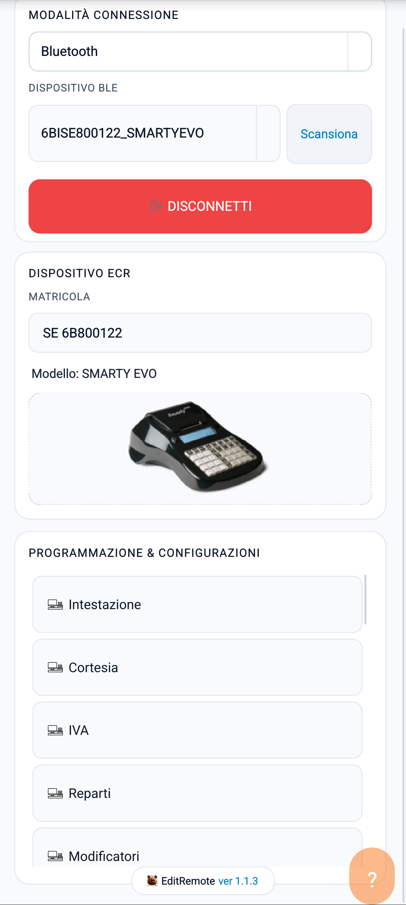
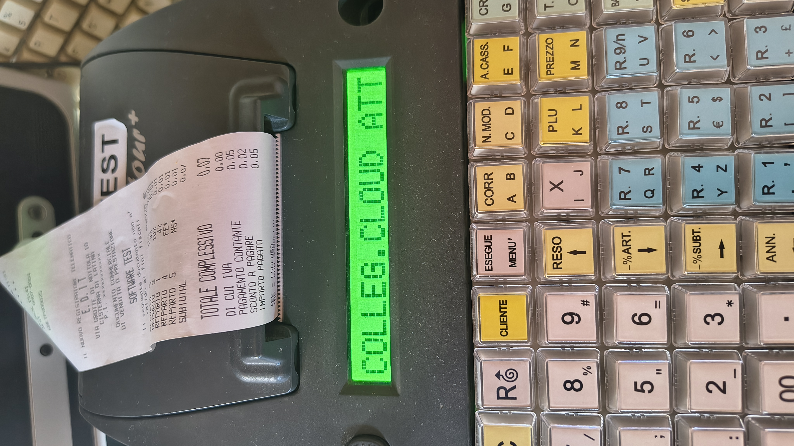
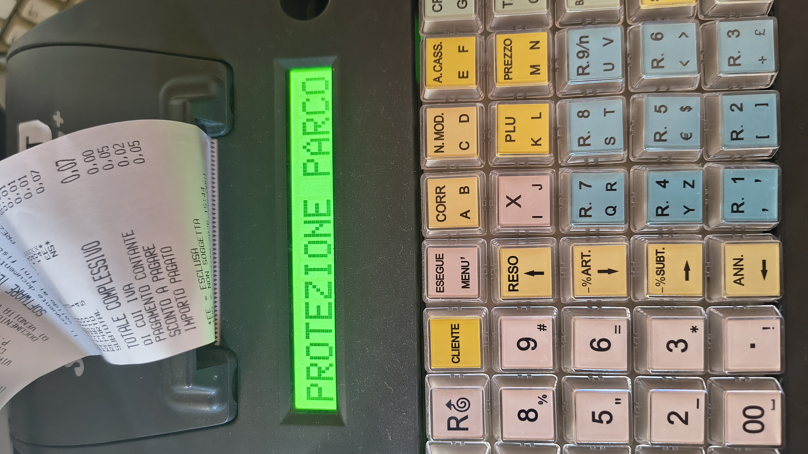
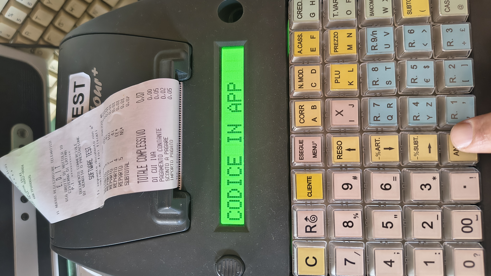
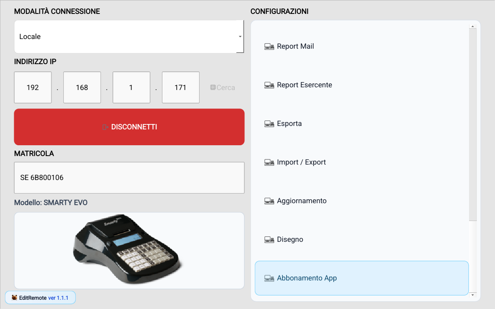

Panoramica app
Schermata principale: campi e funzioni
La schermata principale raccoglie tutti i comandi necessari per collegarsi alla cassa, leggere i dati e aprire le sezioni di programmazione.
Area connessione
- Modalità connessione: Wifi (Locale), Bluetooth (solo Android), Offline, Seriale (solo Windows), Remoto (maggiori informazioni qui). Per abilitare sulla cassa le modalità Wifi, Bluetooth e Seriale, attiva la funzione 720 MENU.
- Indirizzo IP: il numero che identifica la cassa sulla rete del negozio. Serve nella modalità Wifi.
- Cerca: prova a trovare da solo l'indirizzo IP della cassa sulla rete.
- Porta COM: compare in modalità Seriale. Serve per il collegamento diretto con cavo.
- Connetti / Disconnetti: avvia o chiude il collegamento con la cassa.

Area identificazione dispositivo
- Matricola: il numero che identifica la cassa. Viene letto dalla cassa oppure inserito a mano in modalità Offline.
- Modello: il modello di cassa, riconosciuto dall'app oppure scelto a mano in modalità Offline.
- Immagine modello: immagine del modello di cassa che stai usando.
Area Configurazioni
- Elenco delle sezioni che puoi programmare: Reparti, IVA, Articoli, Pagamenti, Clienti, POS e altre.
- Le voci non compatibili con il modello o la versione della cassa restano disattivate automaticamente.
- La voce Abbonamento App resta sempre accessibile, per controllare lo stato del piano.
Come ci si connette alla cassa (Locale)
- Seleziona la modalità desiderata: Wifi, Bluetooth (solo Android) oppure Seriale (solo Windows).
- In base alla modalità: in Wifi inserisci l'indirizzo IP oppure usa Cerca; in Bluetooth seleziona il dispositivo; in Seriale seleziona la porta COM.
- Premi Connetti.
- Attendi che l'app indichi che sei connesso, poi apri una sezione e importa i dati.
Collegamento remoto
La modalità Remoto permette di collegare EditRemote alla cassa tramite la rete internet, anche se app e cassa non si trovano sulla stessa rete. Entrambi devono essere collegati a internet.
1. Avvia il collegamento sulla cassa
- Verifica che la cassa sia collegata a internet e annota la sua matricola completa.
- Avvia la funzione 858 MENU sulla cassa. Per il collegamento remoto usa questa funzione, non la 720 MENU usata per il collegamento locale.
- Attendi che la cassa si colleghi a internet: il display mostra COLLEG.CLOUD ATT.. Quello che succede dopo dipende dalla presenza della Protezione Parco.
2A. Cassa senza Protezione Parco
- La cassa genera e mostra un codice temporaneo di 5 cifre: CODICE: 01234 (esempio). Sui display a due righe compare anche INSERIRE IN APP.
- Inserisci questo codice in EditRemote quando richiesto, conservando eventuali zeri iniziali. Non devi digitare il codice sulla tastiera della cassa.
- Completa l'associazione entro 5 minuti. Se scade, riavvia la funzione sulla cassa e usa il nuovo codice.
2B. Cassa con Protezione Parco
- La cassa non mostra un nuovo codice casuale: richiede il codice di Protezione Parco già configurato (codice di 5 cifre), da inserire nell'app.
- Sui display a una riga si alternano PROTEZIONE PARCO e CODICE IN APP. Sui display a due righe compaiono PROT. PARCO e CODICE IN APP.
- Richiedi il codice al tecnico o al gestore autorizzato del parco e inseriscilo in EditRemote. Anche in questo caso completa l'associazione entro 5 minuti dall'avvio della funzione.
Per informazioni sulla configurazione della protezione consulta Protezione parco installato.



3. Collega EditRemote
- Nella schermata principale seleziona Remoto come modalità di connessione.
- Inserisci la matricola completa della cassa nell'area Dispositivo ECR. Non serve inserire l'indirizzo IP.
- Premi Connetti.
- Quando compare il messaggio Inserire il codice richiesto dalla cassa (OTP o codice Park Protection), digita il codice temporaneo mostrato dalla cassa oppure il codice di Protezione Parco, in base al caso, e premi Conferma. OTP è il codice di conferma usa e getta.
- Attendi il messaggio Sessione remota pronta: l'app riconosce il modello e il pulsante diventa Disconnetti. Sulla cassa può comparire brevemente OPRZ. COMPLETATA, seguito da COLLEG.CLOUD ATT. con il tempo trascorso.
- Apri una funzione disponibile, ad esempio Info RT o una sezione di programmazione. Durante la lettura attendi che la cassa invii la configurazione; durante il salvataggio attendi la conferma di applicazione. Le funzioni disponibili dipendono dal modello, dalla versione della cassa e dal piano dell'app.
- Al termine premi Disconnetti nell'app per chiudere la sessione.
Aggiornamento della cassa da remoto. Per questo aggiornamento servono il codice fiscale del tecnico, la partita IVA del laboratorio e il file .ecs per il modello collegato. Dopo la presa in carico la cassa termina il collegamento e prosegue con le conferme dell'esercente. L'esito finale viene comunicato dall'esercente al tecnico. Per l'aggiornamento locale vedi Aggiornamento.
Gestione DGFE da remoto. Solo in collegamento Remoto è disponibile la voce Gestione DGFE, per leggere le informazioni del giornale elettronico, ricaricarne la scadenza e gestire OTP e conversioni. I messaggi compaiono nell'app e la cassa non stampa nulla. Vedi Gestione DGFE.
Come si opera in offline
- Seleziona Offline.
- Scegli il modello di cassa.
- Apri le sezioni e prepara o modifica la configurazione.
- Salva la configurazione in un file di salvataggio, per tenerne una copia di sicurezza o per caricarla in seguito.
Prima connessione

